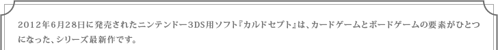
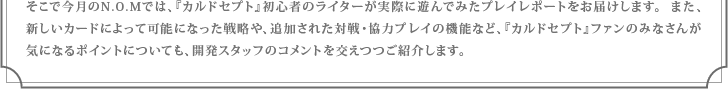

1. はじめての『カルドセプト』プレイレポートその1
2. はじめての『カルドセプト』プレイレポートその2
3. みんなで遊ぶともっと楽しい！〜充実の通信機能〜


『カルドセプト』/ 発売日：2012年6月28日 ジャンル：カードゲーム＋ボードゲーム 希望小売価格：4,800円(税込) プレイ人数：1人（通信プレイ時：2〜4人） メーカー名：任天堂 / 公式ページへ
● N.O.Mのバックナンバーページへ